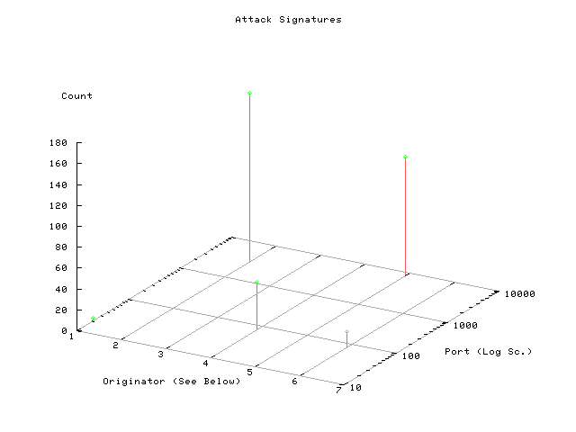

<body bgcolor=white>
<center>
<font face=arial>
<h1>  SNORT Graphical Plot</h1>

<br>


</center>
Please note that the hosts in the table appear in the chronological
order that they were logged in syslog
<br>
<p>
</font>
<center>
<table bgcolor="#eeeeee" cellpadding=5>
<tr bgcolor=red>
<th>A/A</th><th>Source</th><th>Destination</th><th>Method</th><th>Dest Port</th><th>Count</th>
</tr>

<tr>
                <td bgcolor=gray>1</td>
                <td>pool-68-160-122-250.mad.east.verizon.net</td>
                <td>metoxos</td>

                <td>SCAN Proxy attempt</td>
                <td>8080</td>
                <td>14</td>
                </tr>
<tr>
                <td bgcolor=gray>2</td>
                <td>metoxos</td>
                <td>athsrch01.forthnet.gr</td>

                <td>WEB-MISC 403 Forbidden</td>
                <td>57517</td>
                <td>1</td>
                </tr>
</TABLE><hr><h1> PORTSCANS </h1><pre></center>
</pre>
<hr> snortplot by Angelos Karageorgiou angelos@unix.gr
